Чертежи печатных плат
Термины по печатным платам (ПП) и узлам, содержащим печатную плату с навесными элементами, приведены в ГОСТ 20406—75 (СТ СЭВ 785—77). Методы конструирования и расчета содержит ОСТ 4.010. 022—85, общие технические условия приведены в ГОСТ 23752—79 (СТ СЭВ 2742—80, 2743—80). Печатные платы делятся на односторонние (ОПП), двусторонние (ДПП), многослойные (МПП) на жестком и гибком диэлектрическом основании. Применяются также гибкие печатные кабели (ГПК).
Односторонние ПП (рис 1.) характеризуются: повышенной точностью выполнения проводящего рисунка; отсутствием металлизированных отверстий; установкой изделий электронной техники (ИЭТ) на поверхность ПП со стороны, противоположной стороне пайки, без дополнительного изоляционного покрытия; низкой стоимостью.
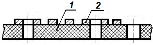
Рис. 1 - Односторонняя печатная плата:
1 — материал основания; 2 — проводящий рисунок
Двусторонние ПП (рис. 2) без металлизации монтажных и переходных отверстий (рис. 2, а) характеризуются: высокой точностью выполнения проводящего рисунка, использованием объемных металлических элементов конструкции (штыри, отрезки проволоки, арматура переходов и т. п.) для соединения элементов проводящего рисунка, расположенных на противоположных сторонах печатной платы; низкой стоимостью.
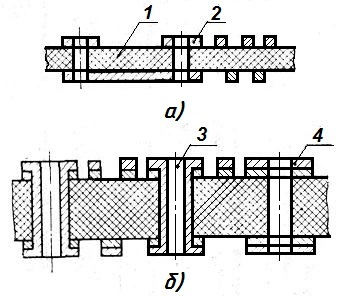
Рис. 2 - Двусторонняя печатная плата:
а - без металлизации отверстий; б - с металлизацией отверстий;
1 - материал основания; 2 - проводящий рисунок; 3 — металлизированное отверстие; 4 — химикотехнологическое покрытие
Двусторонние ПП с металлизированными монтажными и переходными отверстиями (рис. 2, б) характеризуются: широкими коммутационными возможностями; повышенной прочностью сцепления выводов навесных ИЭТ с проводящим рисунком платы; повышенной стоимостью по сравнению с ПП без гальванического соединения слоев.
Многослойные ПП с металлизацией сквозных отверстий (ОСТ 4.010. 022—85) (рис. 3) характеризуются: хорошими коммутационными свойствами; наличием межслойных соединений, осуществляемых с помощью сквозных металлизированных отверстий, а также, в особых случаях, с помощью переходных отверстий, соединяющих только внутренние слои; предпочтительным использованием одностороннего фольгн-рованного диэлектрика для наружных и двустороннего — для внутренних слоев; обязательным наличием контактных площадок на любом проводящем слое имеющем электрическое соединение с переходными отверстиями; низкой ремонтопригодностью; высокой помехозащищенностью электрических цепей; высокой стоимостью конструкции.
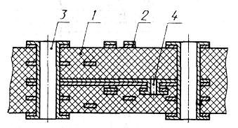
Рис. 3 - Многослойная печатная плата:
1 - материал основания: 2 — проводящий
рисунок; 3 - сквозное металлизированное отверстие; 4 — переходное отверстие
Гибкий печатный кабель (рис. 4) характеризуется: высокой гибкостью; малыми толщинами; возможностью подключения к ПП без использования соединителей; использованием одно- и двусторонних тонких фольгированных диэлектриков на лавсановой и полиамидной основах; одно- и двурядным расположением лепестков; возможностью автоматизации процессов изготовления.
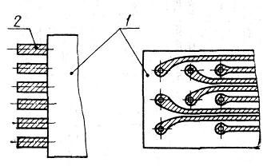
Рис. 4 - Гибкий печатный кабель:
1 -материал основания; 2 - концевой контакт
Конструирование ПП и гибких печатных кабелей осуществляют ручным, полуавтоматизированным и автоматизированным методами.
При ручном методе размещение ИЭТ на ПП и трассировку печатных проводников осуществляет непосредственно конструктор. Данный метод обеспечивает оптимальное распределение проводящего рисунка.
размещение навесных ИЭТ с помощью ЭВМ при ручной трассировке печатных проводников; ручное размещение ИЭТ при автоматизированной трассировке печатных проводников; ручное размещение ИЭТ при ручной трассировке печатных проводников с автоматизированным переносом рисунка на машинные носители. Метод обеспечивает высокую производительность труда.
Автоматизированный метод предусматривает: кодирование исходных данных; размещение навесных элементов; трассировку печатных проводников с помощью ЭВМ. Допускается доработка отдельных соединений вручную. Метод обеспечивает высокую производительность труда.
Согласно ГОСТ 10317—79 «Платы печатные. Основные размеры» размеры каждой стороны ПП должны быть кратными:
- 2,5 при длине до 100 мм;
- 5,0 при длине 350 мм;
- 10,0 при длине более 350 мм.
Таблица 1
| Ширина | Длина | Ширина | Длина | Ширина | Длина | Ширина | Длина | Ширина | Длина |
|---|---|---|---|---|---|---|---|---|---|
| 22,5 | 60 | 62,5 | 125 | 90 | (90) | 120 | 140 | 170 | 170 |
| 30 | 40 | 65 | 90 | 100 | (160) | 200 | |||
| 55 | 100 | 110 | 180 | 240 | |||||
| 60 | 70 | (70) | 120 | 200 | 250 | ||||
| (90) | (90) | 130 | 220 | 270 | |||||
| 35 | 100 | 110 | 150 | 240 | 280 | ||||
| 40 | (40) | 120 | 160 | 280 | 300 | ||||
| 50 | (140) | 170 | 130 | 150 | 340 | ||||
| 60 | 150 | (180) | 170 | 185 | 205 | ||||
| (80) | 75 | 170 | 200 | 200 | 270 | ||||
| 100 | 80 | 80 | 260 | 300 | 200 | 220 | |||
| (120) | 90 | 100 | 100 | 140 | (140) | 240 | |||
| 50 | (50) | 100 | 110 | 150 | 320 | ||||
| 60 | (110) | 120 | 220 | 240 | 300 | ||||
| (70) | 120 | 150 | 240 | 320 | |||||
| 75 | 140 | 160 | 280 | ||||||
| 80 | 160 | (170) | 150 | 170 | |||||
| 100 | 200 | 180 | (180) | ||||||
| 60 | 60 | 240 | 200 | 200 | |||||
| (75) | 85 | 150 | 105 | 125 | 240 | ||||
| 80 | 110 | 130 | 280 | ||||||
| 90 | 150 | 160 | 200 | ||||||
| (100) | (160) | 240 | |||||||
| 110 | 170 | 320 | |||||||
| 120 | (200) | ||||||||
| (160) | 260 | ||||||||
| 180 |
Примечание. Размеры печатных плат без скобок являются предпочтительными
Максимальный размер любой из сторон должен быть не более 470 мм. Таблица 1 составлена согласно ОСТ 4.010.020—83, ограничивающего ГОСТ 10317—79. Допуски на линейные размеры платы должны соответствовать установленным стандартами ГОСТ 25346—82 и ГОСТ 25347—82 (СТ СЭВ 145—75 и СТ СЗВ 144—75). Соотношение линейных размеров сторон не более 3:1.Количество типоразмеров ПП в одном изделии следует ограничивать. Рекомендуется разрабатывать ПП прямоугольной формы. Стандарт ОСТ 4.070.010—78 «Платы печатные под автоматическую установку элементов. Конструкция и основные размеры содержит специальные указания для выбора диаметров отверстий и контактных площадок под выводы устанавливаемого элемента (табл. 2), а также другие сведения.
Стандарт ГОСТ 23751—86 устанавливает пять классов точности ПП и гибких печатных кабелей в соответствии со значениями основных параметров и предельных отклонений элементов конструкции (оснований ПП, проводников, контактных площадок, отверстий). Область применения классов точности по ГОСТ 23751—86:
1, 2 — для ПП с дискретными ИЭТ при малой и
средней насыщенности поверхности ПП навесными изделиями.
3 — для ПП с микросборками и микросхемами, имеющими штыревые и планарные выводы, а также с
безвыводными ИЭТ при средней и высокой насыщенности поверхности ПП навесными
изделиями.
4 — для ПП с микросхемами, имеющими штыревые и планарные выводы, а
такжес безвыводными изделиями ИЭТ при высокой насыщенности поверхности ПП
навесными ИЭТ.
Таблица 2
| Диаметр | Минимальное расстояние между центрами отверстий |
||
|---|---|---|---|
| вывода элемента | отверстия | контактной площадки | |
| 0,4; 0,5 | 0,9 | 3,0 | 2,5 |
| 0,6; 0,7 | 1,1 | ||
| 0,8; 0,9 | 1,3 | 3,75 | |
| 1,0;1,1 | 1,5 | ||
| 1,2; 1,3; 1,4 | 1,8 | ||
| 1,5; 1,6 | 2,0 | 4,0 | 5,0 |
| 1,7; 1,8; 1,9 | 2,2 | ||
Примечания:
1. При любой установке элементов диаметры монтажных, переходных метализированных и неметализированных отверстийследует выбирать из ряда:
0,4; 0,5; 0,6; 0,7; 0,8; 0,9; 1,0; 1,1; 1,2; 1,3; 1,4; 1,5; 1,6; 1,7; 1,8; 2,0; 2,1; 2,2; 2,3; 2,4; 2,5; 2,6; 2,7; 2,8; 3,0.
2. Центры отверстий должны располагаться в узлах координатной сетки.
Стандарт ГОСТ 2.417—78 устанавливает основные правила выполнения чертежей ПП—детали (рис. 5). Чертежи ОПП и ДПП именуют: «Плата печатная», а чертеж МПП — «Плата печатная многослойная. Сборочный чертеж». Чертеж слоя МПП с проводящим рисунком, расположенным с одной или двух сторон, именуют: «Слой многослойной печатной платы». Допускается выполнять чертежи слоев последующими листами сборочного чертежа (Лист 2, Лист 3, ...). Чертеж слоя МПП без проводящего рисунка именуют: «Прокладка». Допускается не выпускать чертеж на прокладку, при указании вспецификации ее материала. Чертежи выполняют в масштабах 4:1, 2:1, 1:1. На чертеже изображают одну проекцию с печатными проводниками и отверстиями; допускается приводить дополнительные виды с частичным изображением рисунка. Чертежи однотипных ПП следует выполнять групповым или базовым методами по ГОСТ 2.113— 75 (СТ СЭВ 1179—78). Чертеж слоя МПП помещают на отдельном листе и проставляют габаритные размеры. Рекомендуемые масштабы: 1:1: 2:1; 4:1; 5:1; 10:1.
На рис. 3.5, а и б показано оформление чертежа с помощью прямоугольной координатной сетки, которую наносят тонкими линиями. Основной шаг координатной сетки 2,5 мм, допускаются шаги 1,25 и 0,625 мм.
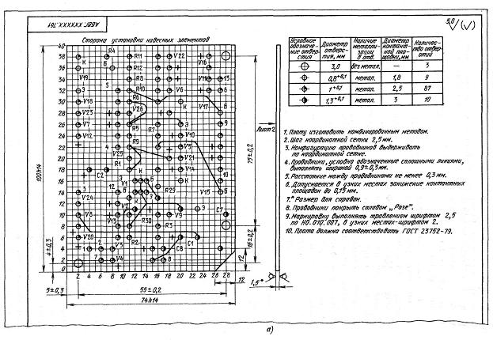
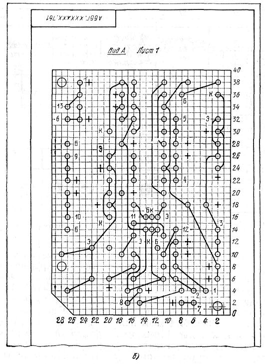
Рис 5 - Чертеж детали — двусторонней печатной платы — лист 1 (а) и лист 2 (б)
Размеры отверстий, их количество, размеры контактных площадок и другие сведения помещают в таблице на чертеже. Рекомендуемая форма таблицы приведена на рис. 6, а. На чертеже платы отверстия показывают упрощенно — одной окружностью (без окружности зенковки и контактной площадки). Чтобы их различать, применяют условные обозначения (рис. 6, б).
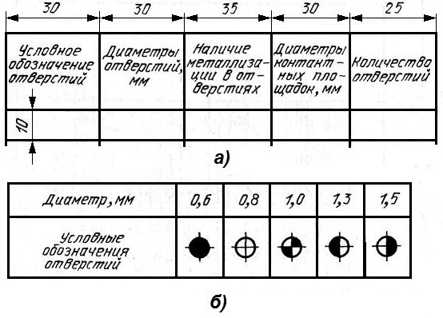
Рис 6 - Чертеж детали — двусторонней печатной платы — лист 1 (а) и лист 2 (б)
Контактные площадки выполняют прямоугольной, круглой или близкой к ним формы. На рис. 7 показаны рекомендуемые формы контактных площадок на широких проводниках.
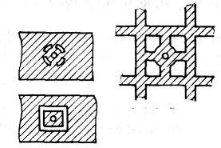
Рис. 7 - Контактные площадки и форма вырезов в проводниках
На рис. 8 и 9 даны примеры простановки размеров для группы монтажных и контактных отверстий, предназначенных для установки на плате одного элемента, прибора (реле, микросхемы, соединителя и др.). Отверстия, расстояния между которыми кратны шагу координатной сетки, располагают в ее узлах, остальные — согласно установочным размерам.
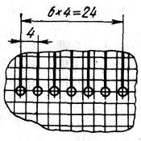
Рис. 8 - Разметка отверстий на плате для установки радиоэлементов, приборов, деталей
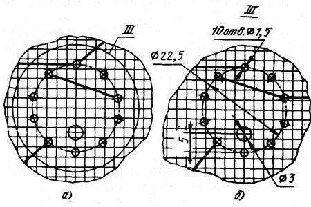
Рис. 9 - Выделение участка с отверстиями для крепления элемента, прибора, детали:
а — на плате; б — на поле чертежа
Вынесенный элемент используют для облегчения чтения чертежа. Как показано на рис. 10, а, отдельные печатные элементы (проводники, экраны, контактные площадки и др.) допускается штриховать. Проводники шириной менее 2,5 мм изображают сплошной толстой основной линией (рис. 10, б), являющейся осью симметрии проводника. Действительная ширина оговаривается в технических требованиях (п. 4 на рис. 5, а). Проводники шириной более 2,5 мм можно изображать двумя линиями; при этом, если они совпадают с линиями координатной сетки, указание ширины на чертеже не требуется.
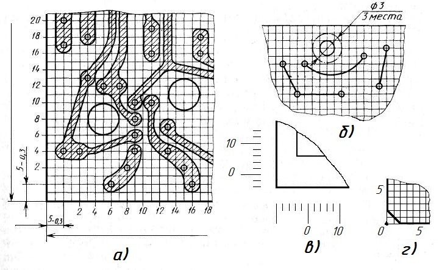
Рис. 10 - Выделение участка с отверстиями для крепления элемента, прибора, детали:
а — на плате; б — на поле чертежа
На чертеже ПП размеры указывают одним из способов:
- в соответствии с ГОСТ 2.307—68;
- нанесением координатной сетки в прямоугольной или полярной системе координат;
- комбинированным способом с помощью размерных и выносных линий и координатной сетки в прямоугольной или полярной системе координат.
Координатную сетку наносят либо на всем поле чертежа (рис. 5), либо на части поверхности ПП, либо рисками по периметру ее контура (рис. 10, в). Линии сетки должны быть пронумерованы подряд или через определенные интервалы (рис. 5 и 10). За нуль в прямоугольной системе координат на главном виде ПП следует принимать:
- центр крайнего левого нижнего отверстия, находящегося на поле платы, в том числе технологического;
- левый нижний угол ПП (см. рис. 5);
- левую нижнюю точку, образованную линиями построения (см. рис. 10, г).
Изображение ПП с повторяющимися элементами
допускается выполнять не полностью, без ущерба для однозначности восприятия
чертежа. При этом должна быть указана закономерность расположения таких
элементов.
Указания о маркировании ПП составляют в
соответствии с ГОСТ 2.314—68. Маркировку располагают на чертеже с одной или с
двух сторон. Она подразделяется на основную и дополнительную. Основная
маркировка наносится обязательно и содержит:
- обозначение ПП или ее условный шифр;
- дату изготовления (год, месяц);
- порядковый номер изменения чертежа, относящийся только к изменению проводящего рисунка;
- буквенно-цифровое обозначение слоя многослойной платы.
Дополнительная маркировка наносится при необходимости и содержит:
- порядковый или заводской номер ПП или партии плат;
- позиционное обозначение навесных ИЭТ;
- изображение контуров указанных навесных изделий;
- цифровое обозначение первого вывода навесного ИЭТ, точек контроля;
- обозначение положительного вывода полярного ИЭТ (знак «+»).
Обозначение ПП должно быть выполнено шрифтом размером не менее 2,5 мм, остальные маркировочные символы — не менее 2,0 мм.
Рекомендуемый состав и последовательность записи технических требований чертежа:
- Печатную плату изготовить ... методом.
- Печатная плата должна соответствовать ГОСТ 23752—79, группа жесткости ....
- Шаг координатной сетки ..., мм.
- Сведения об элементах рисунка печатной платы, не указанные на чертеже.
Параметры элементов рисунка рекомендуется группировать в виде таблиц и размещать на свободном поле чертежа. В таблице можно указывать минимально допустимые значения элементов проводящего рисунка (ширина печатного проводника, диаметр контактной площадки и др.):
- Размеры для справок.
- Покрытие ... (по ГОСТ 9.306—85, ОСТ 4 ГО.014.000).
- Масса покрытия ..., кг (только для драгоценных металлов).
- Маркировать ... шрифт по ... .
- Дополнительные указания.
Порядковый номер изменения чертежа, относящегося только к изменению проводящего рисунка, записывают над основной
надписью на свободном поле чертежа по типу: «Номер изменения проводящего рисунка ... ».
Для ПП и гибких печатных кабелей, имеющих одинаковые технические требования, допускается записывать их на отдельных листах формата А4 (второй, третий и т. д. листы с соответствующей основной надписью по ГОСТ 2.104—68).
Комплектность конструкторских документов на ПП и требования по их выполнению при автоматизированном проектировании устанавливает ГОСТ 2.123—83. Предпочтительным способом изготовления документации является базовый. В состав постоянных данных, помещаемых на базовом чертеже, могут быть включены: изображение платы, указания для механической обработки и для разметки под установку электрического соединителя и крепежных отверстий, сведения о материале, технические требования, расположение печатных проводников, маркировка и т. д. В состав переменных данных, помещаемых на чертеже исполнения, могут быть включены: упрощенное изображение платы, расположение печатных проводников, маркировка, обозначение платы и сборочной единицы, технические требования и др.
При автоматизированном и полуавтоматизированном методах выполнения чертежа ПП допускается в качестве второго листа подлинника чертежа использовать фотопленку в позитивном изображении с рисунком ПП, выполненным в масштабе 1:1. Размеры пленки определяются рисунком ПП. Этот лист чертежа выполняется без соблюдения ГОСТ 2.301—68 и ГОСТ 2.104—68 с указанием на поле, свободном от печатного рисунка, обозначения чертежа, порядкового номера листа и инвентарного номера подлинника. Прочие данные, необходимые для изготовления ПП, следует помещать на первом листе чертежа.
При автоматизированном методе изготовления ПП в состав конструкторской документации допускается включать документы на перфолентах, перфокартах и магнитных носителях, определяющие конструкцию и метод изготовления ПП и их составных частей.